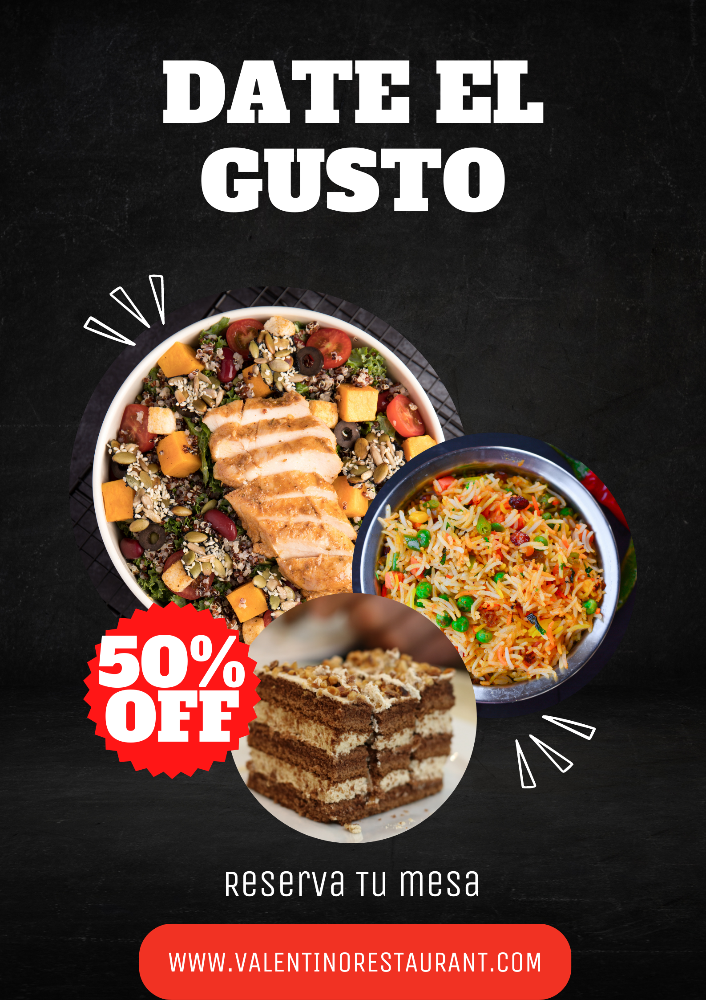

Galería
Visita mi Galería para conocer el estilo que mis clientes adoran. Si no encuentras lo que buscas,ponte encontacto conmigo y te ayudaré con gusto.
Visita la galería

Valentino Barbosa
¿Te interesa saber más sobre lo que hago? Visita mi Galería para conocer el estilo que tanto me caracteriza y que mis clientes adoran. Si no encuentras lo que buscas, ponte en contacto conmigo y te ayudaré con gusto.